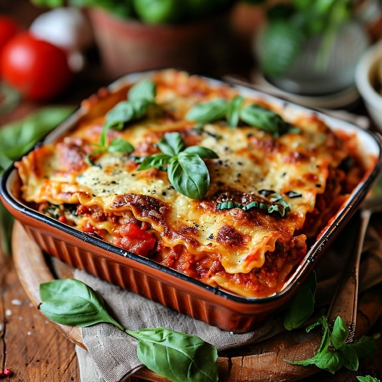

Vegetarian Lasagne

Description
Adaptable recipe that could be made with vege mince or meat
Ingredients
- 10 Sheets of dried lasagne
- 4 oz Red lentils
- 8 tblsp Olive oil
- 1 lb Mixed roast vegetables
- 9 oz Cottage cheese
Steps
- Grease a rectangular tray
- Layer the ingredients
- Cook at 180 C for 45 minutes
Home